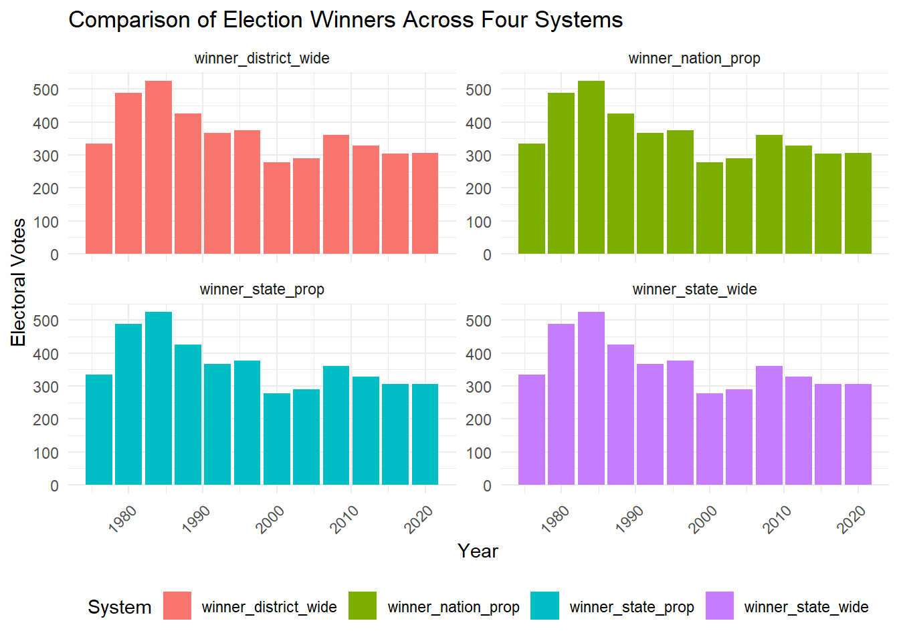

Mini-Project #03: Do Proportional Electoral College Allocations Yield a More Representative Presidency?
U.S. Election. Source: BBC News
Introduction:
The U.S. Electoral College (EC) system plays a crucial role in presidential elections, often making the process more complicated than a straightforward nationwide popular vote. The system has been the subject of ongoing debate, particularly when election results do not align with the popular vote. This analysis aims to examine how the allocation methods used in the Electoral College influence election outcomes and whether they create any potential bias, particularly in favor of one political party.
In this analysis, we explore U.S. House election data from 1976 to 2022, sourced from the MIT Election Data and Science Lab, to better understand voting patterns, party dominance, and demographic shifts. By comparing this data with U.S. Presidential election results, we examine whether a proportional Electoral College system would lead to a presidency that more closely reflects the popular vote and voter sentiment, offering a more representative outcome in future elections.
Data I: US House Election Votes from 1976 to 20221
In this analysis, we will use data from the MIT Election Data Science Lab, which provides comprehensive details on U.S. House election outcomes from 1976 to 2022. Additionally, we will incorporate data on U.S. presidential elections2 to explore trends across both national and congressional races from 1976 to 2020. This rich dataset allows us to investigate voting patterns, party shifts, and electoral dynamics over nearly half a century.
Show the code
# load all necessary functions required in this report ahead of timelibrary(tigris)library(tools)library(usmap)library(httr)library(tidyverse)library(dplyr)library(ggplot2)library(gt)library(sf)library(stringr)library(knitr)library(kableExtra)library(formattable)library(scales)library(gganimate)library(gifski)#| code-fold: true#| code-summary: "Show the code"# Define the path to the CSV filecsv_file_path <-"C:/Users/zhuol/OneDrive/Documents/STA9750-2024-FALL/congressional_shapefiles/1976-2022-house.csv"# Check if the CSV file existsif (file.exists(csv_file_path)) {# Read the CSV file house_1976_2022 <-read.csv(csv_file_path)}# Define the path to the CSV filecsv_file_path_2 <-"C:/Users/zhuol/OneDrive/Documents/STA9750-2024-FALL/president_data/1976-2020-president.csv"if (file.exists(csv_file_path_2)) {# Read the CSV file president_1976_2020 <-read.csv(csv_file_path_2)}
Next, to visualize past election results on a U.S. map, we need to download the district shapefiles for the U.S. from 1976 to 2022. Specifically, we will obtain the district shapefiles from 1976 to 2012 from Lewis et al.4, using the following code to automate the process.
Show the code
# Load necessary librarylibrary(httr)# Create directory for UCLA shapefilesucla_dir <-"C:/Users/zhuol/OneDrive/Documents/STA9750-2024-FALL/data/UCLA_congress"dir.create(ucla_dir, showWarnings =FALSE, recursive =TRUE)# Function to download specific UCLA shapefilesdownload_ucla_shapefiles <-function(sessions, base_url) {for (session in sessions) { file_name <-paste0("districts", sprintf("%03d", session), ".zip") url <-paste0(base_url, file_name) destfile <-file.path(ucla_dir, file_name) response <-GET(url, write_disk(destfile, overwrite =TRUE)) }}# Define the base URL for UCLA shapefilesucla_base_url <-"https://cdmaps.polisci.ucla.edu/shp/"# download districts 093 to 112sessions_to_download <-93:112# Download the specified UCLA shapefilesdownload_ucla_shapefiles(sessions_to_download, ucla_base_url)
For elections from 2014 to the present, we can use the following code to automatically download congressional district shapefiles for the US Census Bureau6.
Show the code
# Create directory for Census shapefilescensus_dir <-"C:/Users/zhuol/OneDrive/Documents/STA9750-2024-FALL/data/census_congress"dir.create(census_dir, showWarnings =FALSE, recursive =TRUE)# Function to download Census shapefiles systematicallydownload_census_shapefiles <-function(urls) {for (url in urls) { file_name <-basename(url) destfile <-file.path(census_dir, file_name) response <-GET(url, write_disk(destfile, overwrite =TRUE)) }}# Define URLs for Census shapefilescensus_shapefile_urls <-c("https://www2.census.gov/geo/tiger/TIGER2014/CD/tl_2014_us_cd114.zip","https://www2.census.gov/geo/tiger/TIGER2015/CD/tl_2015_us_cd114.zip","https://www2.census.gov/geo/tiger/TIGER2016/CD/tl_2016_us_cd115.zip","https://www2.census.gov/geo/tiger/TIGER2017/CD/tl_2017_us_cd115.zip","https://www2.census.gov/geo/tiger/TIGER2018/CD/tl_2018_us_cd116.zip","https://www2.census.gov/geo/tiger/TIGER2019/CD/tl_2019_us_cd116.zip","https://www2.census.gov/geo/tiger/TIGER2020/CD/tl_2020_us_cd116.zip","https://www2.census.gov/geo/tiger/TIGER2021/CD/tl_2021_us_cd116.zip","https://www2.census.gov/geo/tiger/TIGER2022/CD/tl_2022_us_cd116.zip")# Download Census shapefilesdownload_census_shapefiles(census_shapefile_urls)
Task 3: Exploration of Vote Count Data
Question 1: Which states have gained and lost the most seats in the US House of Representatives between 1976 and 2022?
Using the code below, I create a bar chart to illustrate the number of seats in the US House of Representatives between 1976 and 2022 per state. Over time, certain states have gained and/or lost seats based on population changes.
Show the code
# Calculate the number of districts (seats) per state per yearseats_by_state <- house_1976_2022 %>%group_by(state_po, year) %>%# Use state_po for state abbreviationssummarise(seats =n_distinct(district), .groups ="drop") %>%ungroup()# Filter for the years 1976 and 2022seats_1976_2022 <- seats_by_state %>%filter(year %in%c(1976, 2022))# Create a bar plot ggplot(seats_1976_2022, aes(x = state_po, y = seats, fill =factor(year))) +geom_bar(stat ="identity", position ="dodge") +labs(title ="Number of Seats in the U.S. House of Representatives (1976 vs 2022)",x ="State Abbreviation",y ="Number of Seats",fill ="Year") +theme_minimal() +theme(axis.text.x =element_text(angle =90, hjust =1), legend.position ="bottom") +scale_fill_manual(values =c("1976"="skyblue", "2022"="darkorange"))
In the code below, I calculated the change in the number of seats in the U.S. House of Representatives from 1976 to 2022, highlighting how shifts in population have affected state representation. Texas saw the largest gain, with an increase of 14 seats, while New York had the largest loss, dropping 13 seats. In total, 15 states gained seats, while 19 states lost seats. These changes result from population fluctuations recorded in the decennial U.S. Census, which determines how the 435 House seats are distributed among states based on their relative populations. Such shifts in representation reflect broader trends in demographics, migration, and population growth or decline over time.
Show the code
# Count the number of seats per state for each yeargains_losses <- house_1976_2022 |>group_by(state, year) |>summarise(num_districts =n_distinct(district)) |>arrange(state, year) |>group_by(state) |>summarise(first_year_seats =first(num_districts),last_year_seats =last(num_districts),seat_change = last_year_seats - first_year_seats) |>filter(seat_change !=0) |>arrange(desc(seat_change)) # Calculate seat changes for each state# Show the plotggplot(gains_losses, aes(x =reorder(state, seat_change), y = seat_change, fill = seat_change >0)) +geom_bar(stat ="identity") +coord_flip() +scale_fill_manual(values =c("lightpink", "skyblue"), labels =c("Loss", "Gain")) +labs(title ="Gains and Losses of House Seats (1976 to 2022)",x ="State",y ="Change in Seats",fill ="Change" ) +theme_minimal()
Question 2: New York State has a unique “fusion” voting system where one candidate can appear on multiple “lines” on the ballot and their vote counts are totaled. For instance, in 2022, Jerrold Nadler appeared on both the Democrat and Working Families party lines for NYS’ 12th Congressional District. He received 200,890 votes total (184,872 as a Democrat and 16,018 as WFP), easily defeating Michael Zumbluskas, who received 44,173 votes across three party lines (Republican, Conservative, and Parent).
Are there any elections in our data where the election would have had a different outcome if the “fusion” system was not used and candidates only received the votes their received from their “major party line” (Democrat or Republican) and not their total number of votes across all lines?
In the table, I’ve included a comparison of districts where there was a notable difference in the winner under the fusion voting system. The results suggest that New York’s election outcomes are significantly impacted by the fusion system, as it appears to influence the final winner in many districts. The data suggests that the fusion system plays an important role in shaping election results in New York.
Show the code
# Find winner without fusion systemwinner_no_fusion_votes <- house_1976_2022 %>%group_by(year, state, district, candidate, party) %>%summarize(party_votes =sum(candidatevotes)) %>%ungroup() %>%group_by(year, state, district) %>%filter(party_votes ==max(party_votes)) %>%ungroup() %>%select(c(year, state, district, candidate))# Find winner with fusion systemwinner_fusion_votes <- house_1976_2022 %>%group_by(year, state, district, candidate) %>%summarize(candidate_total =sum(candidatevotes)) %>%ungroup() %>%group_by(year, state, district) %>%filter(candidate_total ==max(candidate_total)) %>%ungroup() %>%select(c(year, state, district, candidate))# Combine to compare differencecomparison_winner <-left_join(winner_fusion_votes, winner_no_fusion_votes, by =c("year", "state", "district")) %>%rename(winner_fusion = candidate.x,winner_no_fusion = candidate.y) %>%mutate(same_winner = (winner_fusion == winner_no_fusion)) %>%filter(same_winner ==FALSE)# Prepare the data frame for kablecomparison_winner_df <- comparison_winner %>%select(c('year', 'state', 'district', 'winner_fusion', 'winner_no_fusion'))# Create a kable table for the resultskable(comparison_winner_df, caption ="Table 1: Differences in House Seat Winners with Fusion and Without Fusion", col.names =c("Year", "State", "District", "Fusion Winner", "No Fusion Winner"),format ="html", align ="c") %>%kable_styling(bootstrap_options =c("striped", "hover", "condensed"), full_width = F)
Table 1: Differences in House Seat Winners with Fusion and Without Fusion
Year
State
District
Fusion Winner
No Fusion Winner
1976
NEW YORK
29
EDWARD W PATTISON
JOSEPH A MARTINO
1980
NEW YORK
3
GREGORY W CARMAN
JEROME A AMBRO JR
1980
NEW YORK
6
JOHN LEBOUTILLIER
LESTER L WOLFF
1984
NEW YORK
20
JOSEPH J DIOGUARDI
OREN J TEICHER
1986
NEW YORK
27
GEORGE C WORTLEY
ROSEMARY S POOLER
1992
CONNECTICUT
2
SAM GEJDENSON
EDWARD W MUNSTER
1992
NEW YORK
3
PETER T KING
STEVE A ORLINS
1994
NEW YORK
1
MICHAEL P FORBES
GEORGE J HOCHBRUECKNER
1996
NEW YORK
1
MICHAEL P FORBES
NORA L BREDES
1996
NEW YORK
30
JACK QUINN
FRANCIS J PORDUM
2000
CONNECTICUT
2
ROB SIMMONS
SAM GEJDENSON
2006
NEW YORK
25
JAMES T WALSH
DAN MAFFEI
2006
NEW YORK
29
JOHN R "RANDY" KUHL JR
ERIC J MASSA
2010
NEW YORK
13
MICHAEL G GRIMM
MICHAEL E MCMAHON
2010
NEW YORK
19
NAN HAYMORTH
JOHN J HALL
2010
NEW YORK
24
RICHARD L HANNA
MICHAEL A ARCURI
2010
NEW YORK
25
ANN MARIE BUERKLE
DANIEL B MAFFEI
2012
NEW YORK
27
CHRIS COLLINS
KATHLEEN C HOCHUL
2018
NEW YORK
1
LEE M ZELDIN
PERRY GERSHON
2018
NEW YORK
24
JOHN M KATKO
DANA BALTER
2018
NEW YORK
27
CHRIS COLLINS
NATHAN D MCMURRAY
2022
NEW YORK
4
ANTHONY P D’ESPOSITO
LAURA A GILLEN
2022
NEW YORK
17
MICHAEL V LAWLER
SEAN PATRICK MALONEY
2022
NEW YORK
22
BRANDON M WILLIAMS
FRANCIS CONOLE
Question 3: Do presidential candidates tend to run ahead of or run behind congressional candidates in the same state? That is, does a Democratic candidate for president tend to get more votes in a given state than all Democratic congressional candidates in the same state?
Does this trend differ over time? Does it differ across states or across parties? Are any presidents particularly more or less popular than their co-partisans?
Looking at the table, I noticed that there were many cases in which presidential candidates tend to run ahead of the congressional candidates in the same state.This trend suggests that voters may be more engaged or focused on the presidential race, potentially leading to higher turnout or stronger support for presidential candidates compared to those running for Congress.
Show the code
# Summarize presidential votes for candidatespresidential_votes <- president_1976_2020 %>%filter(party_simplified %in%c("DEMOCRAT", "REPUBLICAN")) %>%group_by(year, state, party_simplified) %>%summarise(presidential_total_votes =sum(candidatevotes, na.rm =TRUE),.groups ="drop" )# Summarize congressional votes for candidatescongressional_votes <- house_1976_2022 %>%filter(party %in%c("DEMOCRAT", "REPUBLICAN")) %>%group_by(year, state, party) %>%summarise(congressional_total_votes =sum(candidatevotes, na.rm =TRUE),.groups ="drop" )# Join to comparevote_comparison <-left_join(presidential_votes, congressional_votes, by =c("year", "state", "party_simplified"="party")) %>%mutate(vote_difference = presidential_total_votes - congressional_total_votes,run_ahead =if_else(vote_difference >0, "Presidential Ahead", "Presidential Behind") ) %>%arrange(run_ahead, vote_difference)# Remove rows with NA or 0vote_comparison_cleaned <- vote_comparison %>%filter(!is.na(vote_difference) & vote_difference !=0)# Create a kable table showing only the first 15 rowskable(head(vote_comparison_cleaned, 15), caption ="Comparison of Presidential vs Congressional Votes by State and Year (First 15 Rows)",col.names =c("Year", "State", "Party", "Presidential Votes", "Congressional Votes", "Vote Difference", "Result"),align =c("c", "c", "c", "r", "r", "r", "c")) %>%kable_styling("striped", full_width =FALSE) %>%column_spec(4, color =ifelse(head(vote_comparison_cleaned, 15)$run_ahead =="Presidential Ahead", "lightgreen", "orange")) %>%column_spec(5, color =ifelse(head(vote_comparison_cleaned, 15)$run_ahead =="Presidential Ahead", "lightgreen", "orange"))
Comparison of Presidential vs Congressional Votes by State and Year (First 15 Rows)
Year
State
Party
Presidential Votes
Congressional Votes
Vote Difference
Result
1984
NEW MEXICO
DEMOCRAT
201769
201131
638
Presidential Ahead
1988
ALASKA
DEMOCRAT
72584
71881
703
Presidential Ahead
2016
LOUISIANA
REPUBLICAN
1178638
1177543
1095
Presidential Ahead
2008
OREGON
DEMOCRAT
1037291
1036171
1120
Presidential Ahead
1992
VERMONT
REPUBLICAN
88122
86901
1221
Presidential Ahead
1984
NEW HAMPSHIRE
DEMOCRAT
120347
119111
1236
Presidential Ahead
1984
VIRGINIA
DEMOCRAT
796250
795009
1241
Presidential Ahead
1980
MISSISSIPPI
DEMOCRAT
429281
427773
1508
Presidential Ahead
2000
WASHINGTON
DEMOCRAT
1247652
1245872
1780
Presidential Ahead
1980
ALASKA
DEMOCRAT
41842
39922
1920
Presidential Ahead
2016
DELAWARE
DEMOCRAT
235603
233554
2049
Presidential Ahead
1984
RHODE ISLAND
DEMOCRAT
197106
194925
2181
Presidential Ahead
2000
RHODE ISLAND
DEMOCRAT
249508
247247
2261
Presidential Ahead
1996
NEW MEXICO
DEMOCRAT
273495
271144
2351
Presidential Ahead
2016
WISCONSIN
DEMOCRAT
1382536
1379996
2540
Presidential Ahead
The bar graph illustrates the difference between presidential and congressional vote totals across election years, highlighting whether the presidential vote was higher or lower than the congressional vote.
Show the code
# Create the bar graph to show the difference between presidential and congressional votesggplot(vote_comparison_cleaned, aes(x =factor(year), y = vote_difference, fill = run_ahead)) +geom_bar(stat ="identity", position ="dodge") +scale_fill_manual(values =c("Presidential Ahead"="green", "Presidential Behind"="red")) +labs(title ="Difference Between Presidential and Congressional Votes",subtitle ="Presidential Votes Minus Congressional Votes by Year",x ="Year",y ="Vote Difference",fill ="Result" ) +theme_minimal() +theme(legend.position ="bottom") +theme(plot.title =element_text(size =14, face ="bold"),plot.subtitle =element_text(size =12) )
Importing and Plotting Shape File Data
Task 4: Automate Zip File Extraction
Reading Data I
In this code, I created a function to read the UCLA shapefiles that were previously downloaded.
Show the code
# Function to read UCLA shapefiles into Rread_ucla_shapefiles <-function(directory) { shapefiles <-list.files(directory, pattern ="\\.zip$", full.names =TRUE) results <-list()for (zip_file in shapefiles) { unzip_dir <-tempdir()unzip(zip_file, exdir = unzip_dir) shp_files <-list.files(unzip_dir, pattern ="\\.shp$", full.names =TRUE, recursive =TRUE)for (shp_file in shp_files) { sf_object <- sf::st_read(shp_file, quiet=TRUE) results[[basename(shp_file)]] <- sf_object } }return(results)}# Read the downloaded UCLA shapefiles into Rucla_shapefiles <-read_ucla_shapefiles(ucla_dir)
Reading data II
Similarly, in this code, I created a function to read specific Census shapefiles into R.
Show the code
# Function to read specific Census shapefiles into Rread_census_shapefiles <-function(directory, filenames) { shapefiles <-list.files(directory, pattern ="\\.zip$", full.names =TRUE) results <-list()for (zip_file in shapefiles) { unzip_dir <-tempdir()unzip(zip_file, exdir = unzip_dir) shp_files <-list.files(unzip_dir, pattern ="\\.shp$", full.names =TRUE, recursive =TRUE)for (shp_file in shp_files) {if (basename(shp_file) %in% filenames) {# Attempt to read the shapefile without error handling sf_object <- sf::st_read(shp_file, quiet=TRUE) results[[basename(shp_file)]] <- sf_object } } }return(results)}# List of specific filenames to readdesired_filenames <-c("tl_2014_us_cd114.shp","tl_2015_us_cd114.shp","tl_2016_us_cd115.shp","tl_2017_us_cd115.shp","tl_2018_us_cd116.shp","tl_2019_us_cd116.shp","tl_2020_us_cd116.shp","tl_2021_us_cd116.shp","tl_2022_us_cd116.shp")# Read the downloaded Census shapefiles into Rcensus_shapefiles <-read_census_shapefiles(census_dir, desired_filenames)
Task 5: Chloropleth Visualization of the 2000 Presidential Election Electoral College Results
In this code, I created a choropleth map to visualize the results of the 2000 U.S. Presidential Election, highlighting the winning party in each state and displaying the number of Electoral College votes (EC) each state contributed. We will use the blue color for the Democratic candidate, Al Gore, and red color to represent the Republican candidate, George W. Bush.
Show the code
CD_106 <- ucla_shapefiles[["districts106.shp"]]# Create electoral college votes columnCD_106_EC <- CD_106 |>mutate(STATENAME =toupper(STATENAME)) |>select(-geometry) |>as.data.frame() |>group_by(STATENAME) |>summarize( EC =n() +2)# Filter data for year 2000 and determine the winning party per statepresident_2000 <- president_1976_2020 %>%filter(year ==2000) %>%group_by(state) %>%mutate(winning_party = party_simplified[which.max(candidatevotes)] ) %>%slice_max(candidatevotes, n =1) %>%ungroup() # Perform the join between CD_106_EC and president_2000 by statepresident_2000_EC <- CD_106_EC %>%left_join(president_2000, by =c("STATENAME"="state")) %>%select(state = STATENAME, EC, winning_party, state_fips)#import shapefiles for statesus_state_shapefiles <- usmap::us_map(regions ="states")us_state_shapefiles <- us_state_shapefiles %>%mutate(fips =as.integer(fips))# Now perform the joinmerged_data <- president_2000_EC |>left_join(us_state_shapefiles, by =c("state_fips"="fips"))# Ensure merged_data is a valid sf objectmerged_data_sf <-st_as_sf(merged_data)# Plot the map with colors based on the winning party and add EC vote labelsggplot(data = merged_data_sf) +geom_sf(aes(fill = winning_party), color ="white", size =0.2) +scale_fill_manual(values =c("REPUBLICAN"="red", "DEMOCRAT"="blue"), labels =c("REPUBLICAN"="Bush (Republican)", "DEMOCRAT"="Gore (Democratic)"), name ="Winning Party") +# Red for Republican, Blue for Democratgeom_sf_text(aes(label = EC), color ="black", size =3, fontface ="bold") +theme_minimal() +labs(title ="2000 Presidential Election: Winning Party by State") +theme(legend.position ="bottom", plot.title =element_text(hjust =0.5, size =16))
Task 6: Advanced Chloropleth Visualization of Electoral College Results
We can expand our findings beyond the 2000 presidential election to show election results over time from 1976-2020. First, using the code below, I generated the individual chloropleth visualizations for each election year.
Show the code
# Function to plot election map for a given yearplot_election_map <-function(election_year, shapefile_key) {# Load appropriate shapefile for districts CD <- ucla_shapefiles[[shapefile_key]]# Create electoral college votes column CD_EC <- CD %>%mutate(STATENAME =toupper(STATENAME)) %>%select(-geometry) %>%as.data.frame() %>%group_by(STATENAME) %>%summarize(EC =n() +2)# Filter election data for the specified year and determine the winning party per state election_data <- president_1976_2020 %>%filter(year == election_year) %>%group_by(state) %>%mutate(winning_party = party_simplified[which.max(candidatevotes)]) %>%slice_max(candidatevotes, n =1) %>%ungroup()# Perform the join between Electoral College data and election data by state election_EC <- CD_EC %>%left_join(election_data, by =c("STATENAME"="state")) %>%select(state = STATENAME, EC, winning_party, state_fips)# Import shapefiles for states us_state_shapefiles <- usmap::us_map(regions ="states") %>%mutate(fips =as.integer(fips))# Now perform the join between election data and state shapefiles merged_data <- election_EC %>%left_join(us_state_shapefiles, by =c("state_fips"="fips"))# Ensure merged data is a valid sf object merged_data_sf <-st_as_sf(merged_data)# Plot the map with colors based on the winning party and add EC vote labels plot <-ggplot(data = merged_data_sf) +geom_sf(aes(fill = winning_party), color ="white", size =0.2) +scale_fill_manual(values =c("REPUBLICAN"="red", "DEMOCRAT"="blue"), labels =c("REPUBLICAN"="Republican", "DEMOCRAT"="Democratic"), name ="Winning Party") +# Red for Republican, Blue for Democratgeom_sf_text(aes(label = EC), color ="black", size =3, fontface ="bold") +theme_minimal() +labs(title =paste(election_year, "Presidential Election: Winning Party by State")) +# Title with dynamic yeartheme(legend.position ="bottom", plot.title =element_text(hjust =0.5, size =16))# Explicitly print the plotprint(plot)}# Define the years of interest and the corresponding shapefile keysyears <-c(1976, 1980, 1984, 1988, 1992, 1996, 2000, 2004, 2008, 2012)shapefile_keys <-c("districts094.shp", "districts096.shp", "districts098.shp", "districts100.shp", "districts102.shp", "districts104.shp", "districts106.shp", "districts108.shp", "districts110.shp", "districts112.shp")# Loop through each year and plot the mapfor (i in1:length(years)) {plot_election_map(years[i], shapefile_keys[i])}
Election map for 2016:
Show the code
# Create the 2016 Election Dataelection_2016_data <-data.frame(state =c("ALABAMA", "ALASKA", "ARIZONA", "ARKANSAS", "CALIFORNIA", "COLORADO", "CONNECTICUT", "DELAWARE", "DISTRICT OF COLUMBIA", "FLORIDA", "GEORGIA", "HAWAII", "IDAHO", "ILLINOIS", "INDIANA", "IOWA", "KANSAS", "KENTUCKY", "LOUISIANA", "MAINE", "MARYLAND", "MASSACHUSETTS", "MICHIGAN", "MINNESOTA", "MISSISSIPPI", "MISSOURI", "MONTANA", "NEBRASKA", "NEVADA", "NEW HAMPSHIRE", "NEW JERSEY", "NEW MEXICO", "NEW YORK", "NORTH CAROLINA", "NORTH DAKOTA", "OHIO", "OKLAHOMA", "OREGON", "PENNSYLVANIA", "RHODE ISLAND", "SOUTH CAROLINA", "SOUTH DAKOTA", "TENNESSEE", "TEXAS", "UTAH", "VERMONT", "VIRGINIA", "WASHINGTON", "WEST VIRGINIA", "WISCONSIN", "WYOMING"),EC =c(9, 3, 11, 6, 55, 9, 7, 3, 3, 29, 16, 4, 4, 20, 11, 6, 6, 8, 8, 4, 10, 11, 16, 10, 6, 10, 3, 5, 6, 4, 14, 5, 29, 15, 3, 18, 7, 7, 20, 4, 9, 3, 11, 38, 6, 3, 13, 12, 5, 10, 3))# Filter data for year 2016 and determine the winning party per statepresident_2016 <- president_1976_2020 %>%filter(year ==2016) %>%group_by(state) %>%mutate(winning_party = party_simplified[which.max(candidatevotes)] ) %>%slice_max(candidatevotes, n =1) %>%ungroup() # Perform the join between CD_106_EC and president_2000 by statepresident_2016_EC <- election_2016_data %>%left_join(president_2016, by =c("state"="state")) %>%select(state, EC, winning_party, state_fips)#import shapefiles for statesus_state_shapefiles <- usmap::us_map(regions ="states")us_state_shapefiles <- us_state_shapefiles %>%mutate(fips =as.integer(fips))# Now perform the joinmerged_data <- president_2016_EC |>left_join(us_state_shapefiles, by =c("state_fips"="fips"))# Ensure merged_data is a valid sf objectmerged_data_sf <-st_as_sf(merged_data)# Plot the map with colors based on the winning party and add EC vote labelsggplot(data = merged_data_sf) +geom_sf(aes(fill = winning_party), color ="white", size =0.2) +scale_fill_manual(values =c("REPUBLICAN"="red", "DEMOCRAT"="blue"), labels =c("REPUBLICAN"="Republican", "DEMOCRAT"="Democratic"), name ="Winning Party") +# Red for Republican, Blue for Democratgeom_sf_text(aes(label = EC), color ="black", size =3, fontface ="bold") +theme_minimal() +labs(title ="2016 Presidential Election: Winning Party by State") +theme(legend.position ="bottom", plot.title =element_text(hjust =0.5, size =16))
The different Electoral College (ECV) allocation rules can have a major impact on presidential election results. Four key ECV strategies are typically considered:
State-Wide Winner-Take-All: Under this system, the candidate who wins the majority of votes in a state receives all of that state’s electoral votes.
District-Wide Winner-Take-All + State-Wide “At Large” Votes: Under this system, a state’s electoral votes based on the winner of individual districts, while the remaining votes are awarded to the statewide winner. It creates more regional representation while still maintaining a dominant role for the overall state victor.
State-Wide Proportional: In this system, electoral votes are distributed in proportion to the percentage of votes each candidate receives within the state.
National Proportional: In this system, electoral votes are allocated across the entire country based on the national vote share, rather than on a state-by-state basis.
Overall, the election results show a notable degree of consistency across the four systems, with the same candidates typically emerging as winners under each method. However, in the years 1988 and 2016, there were slight discrepancies between the winner and their party, depending on the electoral system used. These differences suggest that, while the general trend is stable, the specific mechanics of each voting system can sometimes lead to variations in how the results are distributed or which candidate is declared the winner.
Show the code
# Combine all results into a single long-format dataset for plottingcombined_results_long <- combined_results %>%gather(key ="system", value ="results", winner_state_wide, winner_district_wide, winner_state_prop, winner_nation_prop) %>%gather(key ="party_system", value ="party", party_state_wide, party_district_wide, party_state_prop, party_nation_prop) %>%gather(key ="votes_system", value ="electoral_votes", results_state_wide, results_district_wide, results_state_prop, results_nation_prop) %>%select(year, system, electoral_votes, party)# Create the plotggplot(combined_results_long, aes(x = year, y = electoral_votes, fill = system)) +geom_bar(stat ="identity", position ="dodge") +facet_wrap(~ system, scales ="free_y") +# Facet by systemlabs(title ="Comparison of Election Winners Across Four Systems", y ="Electoral Votes", x ="Year", fill ="System") +theme_minimal() +theme(axis.text.x =element_text(angle =45, hjust =1),legend.position ="bottom")

I believe the National Proportional method is the fairest ECV system, as it allocates electoral votes based on the national popular vote, ensuring that the candidate with the most votes nationwide wins. This would eliminate the possibility of a candidate losing the election despite winning the popular vote. However, implementing this system would require agreement from all states and likely a constitutional amendment.
On the other hand, the State-Wide Winner-Take-All method is the least fair. It allows a candidate to win the presidency by securing enough states to reach 270 electoral votes, even if they lose the national popular vote. This results in an outcome where the Electoral College winner may not reflect the majority of voters’ preferences.7
Footnotes
MIT Election Data and Science Lab, 2017, “U.S. House 1976–2022”, https://doi.org/10.7910/DVN/IG0UN2, Harvard Dataverse, V13, UNF:6:Ky5FkettbvohjTSN/IVldA== [fileUNF]↩︎
MIT Election Data and Science Lab, 2017, “U.S. President 1976–2020”, https://doi.org/10.7910/DVN/42MVDX, Harvard Dataverse, V8, UNF:6:F0opd1IRbeYI9QyVfzglUw== [fileUNF]↩︎